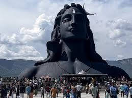

Locations I have gone through
Mumbai

On my First Travel I had gone to Mumbai. Mumbai, also known as the "City of Dreams", offers a captivating blend of historical landmarks, vibrant street life, delectable street food, and a dynamic modern atmosphere. Whether you're a first-time visitor or returning to explore its depth, Mumbai has something to entice every traveler.
- Food Blog
- Travel Blog
- Nice Stay in
Delhi

Delhi, a city brimming with history, culture, and vibrant experiences, offers a rich tapestry of experiences for both locals and tourists alike. If you're looking for insights, recommendations, and explorations of Delhi
- Food Blog
- Travel Blog
- Nice Stay in
coimbatore

Coimbatore is a major city in Tamil Nadu, India, known as the "Manchester of South India" or the "Textile Capital of South India" due to its industrialized nature and flourishing textile industry. It's the second largest city in Tamil Nadu by population and the 16th largest urban agglomeration in India. The city is strategically located, acting as a gateway to the neighboring state of Kerala and the popular hill station of Udhagamandalam (Ooty).
Weather
The current weather in Coimbatore is 30°C, feeling like 35°C
Accomodation
Hotel Park Elanza Coimbatore: A refined hotel with restaurants, a cafe, a nightclub, and a rooftop pool.